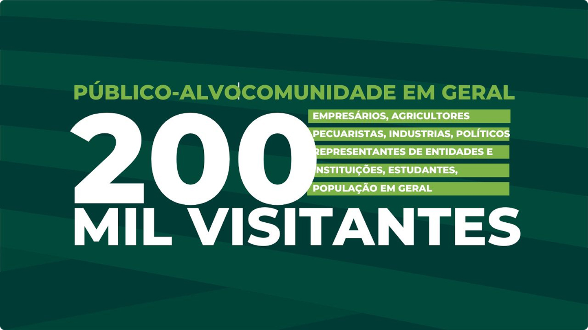
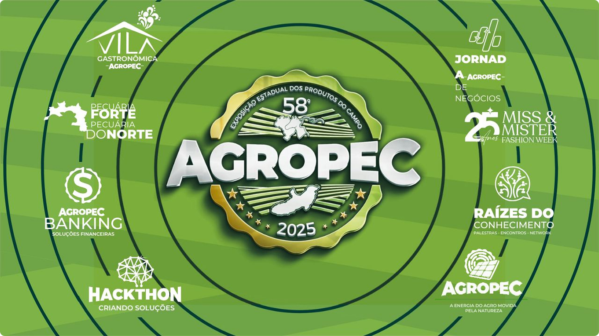
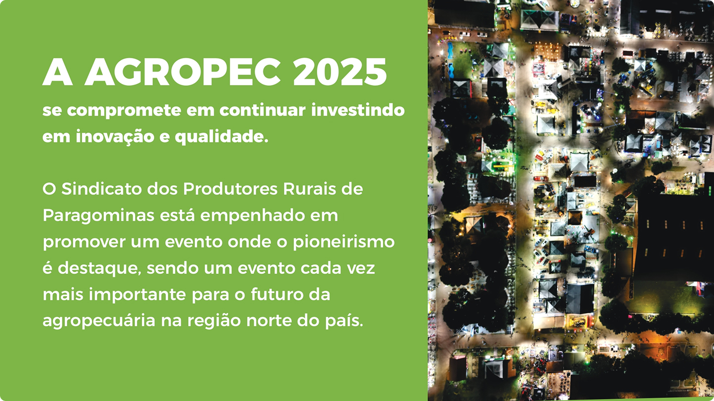
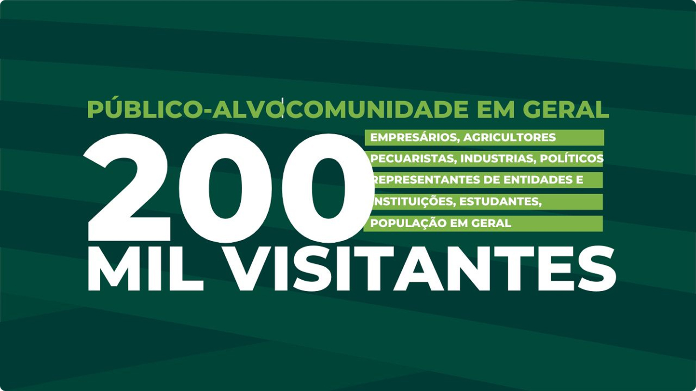
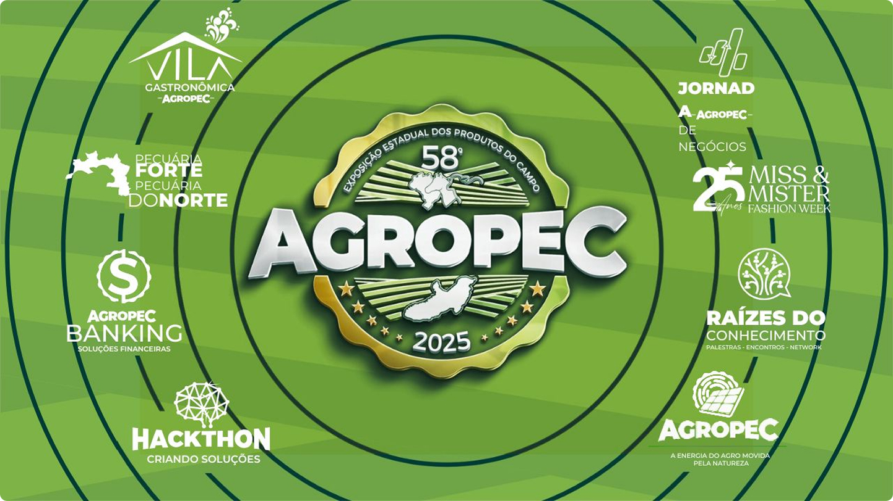
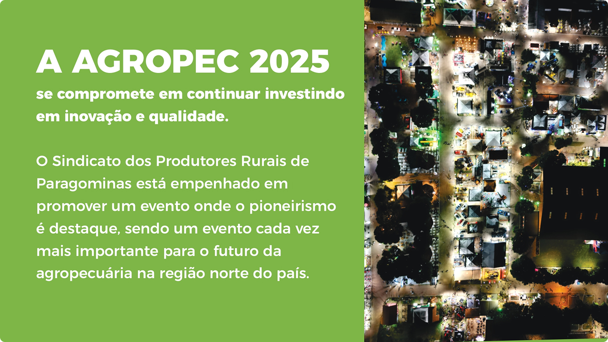

A maior feira de agronegócio do Norte. Conheça nosso aplicativo oficial, confira a programação completa e planeje sua visita de forma inteligente.
Discurso dos organizadores e apresentação cultural.
Marília Tavares vai tremer o chão com sua performance.
Felipe Amorim traz seus maiores sucessos.
Autenticidade dos jovens que vivem e respiram o agro.
Por que a cria NÃO dá lucro?! com Fúlvio Florenzano.
Cia de Rodeio Dallas traz o maior rodeio do Norte.

Acesse o mapa direto pelo site e explore a feira com facilidade

No aplicativo, você tem todo o mapa ao seu alcance, basta fazer o download do aplicativo.
A AGROPEC 2025 conta com diversas barracas e exposições, apresentando uma ampla variedade de temas. Explore cada estande e conheça o trabalho dos nossos parceiros!

Exposição prática sobre produção de adubo a partir de resíduos orgânicos, desenvolvida pelos alunos de Meio Ambiente.

Demonstrações ao vivo de drones agrícolas realizadas pelo grupo de pesquisa em automação do IFPA.

Venda e exposição de alimentos agroecológicos produzidos pelos alunos da Agroindústria, com degustações e explicações nutricionais.

Uma tenda gastronômica com produtos regionais como geleias, pimentas e cafés especiais. Montada com apoio da comunidade local.
A AGROPEC 2025 é possível graças à parceria e ao investimento de marcas que acreditam no potencial do agronegócio. Conheça nossos patrocinadores e fortaleça essa rede que move o campo.